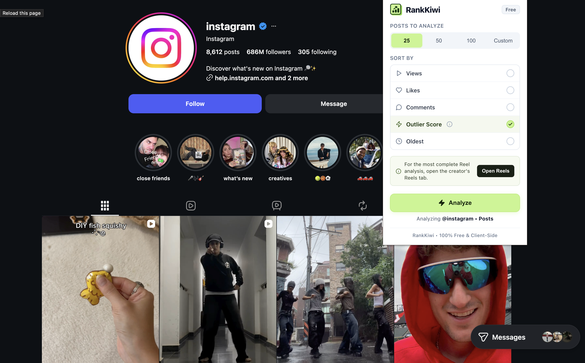
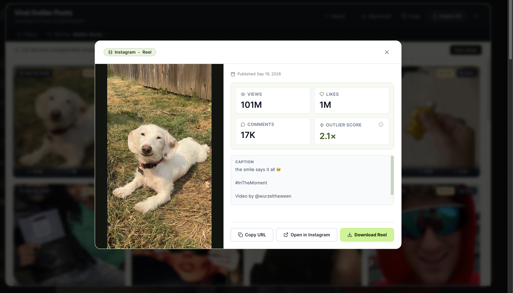
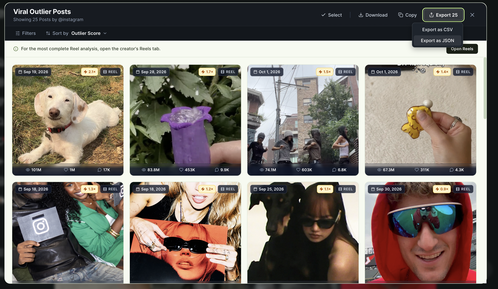

Analyze Instagram Reels, posts, and carousels.
See available views, likes, comments, captions, and Outlier Score for creator content.
- Views
- Likes
- Comments
- Captions
- Outlier Score
INSTAGRAM & YOUTUBE CREATOR RESEARCH
Research creator profiles, sort content by views, likes, comments, and Outlier Score, and find the posts worth studying.
Free to use. No subscription. No separate Rank Kiwi account.
HOW IT WORKS
Open a creator, run an analysis, and sort the content by performance.
Open an Instagram creator profile or YouTube channel.
Choose the supported content surface and how many posts to analyze.
Sort by views, likes, comments, or Outlier Score.



PLATFORMS
See the content performing best on the platforms your audience already uses.
See available views, likes, comments, captions, and Outlier Score for creator content.
YouTube
See available views, likes, comments, and Outlier Score for creator videos and Shorts.
OUTLIER SCORE
Outlier Score compares a post with the creator's typical performance. A higher score means the content performed substantially above that creator's usual baseline.
Illustrative examples only.
Performance multiplier
TypicalClose to a creator's usual range
StrongClearly outperformed the usual
OutlierWorth studying closely
CONTENT DETAILS
Open any result to see its performance metrics, caption, content type, and other available details in one view.
Explore the features →Features
Analyze Instagram and YouTube creator content directly from supported profile pages.
View available views, likes, comments, captions, and other useful content context.
Sort by Outlier Score and identify content that performed far above a creator's typical baseline.
Copy or export your findings as CSV or JSON.
Privacy, plainly stated
No account. No server-side database of your analyzed content. Your requested analysis runs in the browser.
Read our Privacy Policy →Use Rank Kiwi without creating a separate Rank Kiwi account.
Rank Kiwi does not maintain server-side storage of your analyzed content.
Your requested analysis is processed in the browser.
FAQ
Short answers about what Rank Kiwi does and how it works.
Rank Kiwi is a Chrome extension for researching creator content on Instagram and YouTube. It helps you sort content by performance and find posts worth studying.
Open a supported Instagram creator profile, trigger the analysis, and Rank Kiwi surfaces Reels, posts, and carousels alongside views, likes, comments, captions, and Outlier Score.
Navigate to a supported YouTube channel page, run the analysis, and Rank Kiwi displays videos and Shorts with their view counts, likes, comments, and Outlier Score.
Outlier Score is a performance multiplier that compares a post against that creator's typical performance. A score of 5× means the post reached roughly five times the creator's usual result.
Yes. Rank Kiwi is free to install and use. No subscription or paywall.
No. Rank Kiwi does not require a separate account.
Rank Kiwi supports Instagram Reels, posts, and carousels on supported creator profile pages.
Rank Kiwi supports YouTube videos and Shorts on supported channel pages.
Rank Kiwi does not maintain a server-side database of your analyzed content. Analysis is processed in your browser when you use the extension.
Yes. You can export results as CSV or JSON and copy individual findings for your notes.
Rank Kiwi is free
Research Instagram and YouTube creators without manually sorting through hundreds of posts.
No account required.